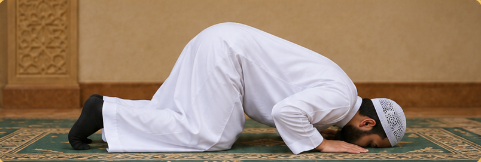

السجود
Sujud · Prostration
السجود
Sujud · Prostration
Sujud · Prostration
١. انزل للسجود بعد الرفع من الركوع قائلاً: الله أكبر.
٢. اسجد على الأعضاء السبعة: الجبهة مع الأنف، الكفّين، الركبتين، وأطراف القدمين.
٣. اجعل البطن بعيدًا عن الفخذين والمرفقين مرفوعين عن الأرض.
٤. قل في السجود:
سبحان ربي الأعلى × 3
ثم ارفع من السجود قائلاً: الله أكبر، ثم اجلس جلسةً خفيفة بين السجدتين.

الدعاء في السجود
سبحان ربي الأعلى × 3
Subhana Rabbiyal A'la (3 times)